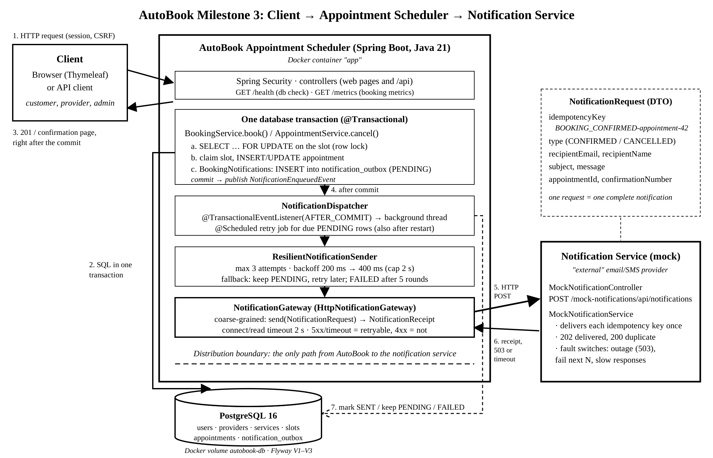

AutoBook is an automotive service appointment system. Customers search open appointment slots offered by repair shops, book a slot, and manage or cancel their appointments. Providers (repair shops) publish and remove availability and see who booked with them. Administrators manage provider records and review all activity.
Milestone 1 delivered the requirements, the five-table relational schema, and a layered Spring Boot skeleton. Milestone 2 added authentication, role-based access control, the booking workflow with transactional double-booking protection, cancellation and history, provider availability, a Thymeleaf website, and 85 integration tests. Milestone 3 makes AutoBook production-shaped: it runs on Java 21 with a persistent PostgreSQL database, sends booking and cancellation confirmations across a distribution boundary to a separate notification service, survives that service being slow or down, reports its health and metrics, and is packaged with Docker and tested on every push by GitHub Actions. All Milestone 1 and Milestone 2 behavior and tests are preserved: the same 85 tests now run on PostgreSQL, alongside 29 new ones.
| Requirement | Status | Where |
|---|---|---|
| Java 21 (professor correction) | Done, built in CI | pom.xml, Dockerfile, ci.yml |
| Persistent database: PostgreSQL (professor correction) | Done, tested | Flyway V1–V3, application.properties |
| Existing bookings survive application restart | Done, tested | ApplicationRestartPersistenceIntegrationTests, CI smoke test |
| Portable setup instructions, no personal paths (professor correction) | Done | README.md, .env.example |
| Mock notification service, coarse-grained DTO and gateway | Done, tested | mocknotification/, NotificationRequest, NotificationGateway |
| Timeout, retries, idempotency, fallback | Done, tested | HttpNotificationGateway, ResilientNotificationSender, NotificationDispatcher |
| Commit-then-notify | Done, tested | BookingNotifications, notification_outbox |
| Logging, health endpoint, booking metrics | Done, tested | observability/, Actuator /health, /metrics |
| Dockerfile, Docker Compose, GitHub Actions, integration tests | Done, CI green | Dockerfile, docker-compose.yml, .github/workflows/ci.yml |
| Annotated milestone Git tags | Done | milestone-1, milestone-2, milestone-3 (Section 12) |
AutoBook keeps the layered architecture from earlier milestones (controllers → services with
@Transactional boundaries → JDBC repositories). Milestone 3 adds a second deployable concern, the
notification service, and makes the line between the two explicit. The client talks only to the Appointment
Scheduler; the scheduler talks to the notification service only through NotificationGateway, over HTTP,
with one coarse-grained message per notification.

The numbered flow for a booking: (1) the customer submits the booking; (2) one database transaction locks the
slot, claims it, inserts the appointment, and inserts a notification row into the outbox; (3) the customer gets the
confirmation as soon as that transaction commits; (4) only after the commit, the dispatcher picks up the outbox row on
a background thread; (5) the gateway posts the NotificationRequest to the notification service; (6) the
service answers with a receipt, a 503, or nothing before the timeout; (7) the dispatcher records the result in the
outbox. Steps 4 to 7 can fail or be repeated without affecting steps 1 to 3.
The mock notification service runs in the same Spring Boot process for the course demo, in its own package
(mocknotification) with its own controller. AutoBook never calls it as a Java object: it uses its HTTP
address, so it can be moved to another host by setting AUTOBOOK_NOTIFICATIONS_URL without code changes.
Milestone 2 used an in-memory H2 database, and schema.sql started with DROP TABLE, so every
restart erased all bookings. Milestone 3 moves the same schema into Flyway migrations on PostgreSQL 16. Flyway runs each
versioned script once and records it in flyway_schema_history, so a restart keeps the data.
| Migration | Contents |
|---|---|
V1__create_booking_schema.sql | The five Milestone 2 tables with the same columns, keys, and constraints; no DROP statements. |
V2__seed_demo_data.sql | The Milestone 2 demo users, providers, services, slots, and appointments (applied once). |
V3__create_notification_outbox.sql | The new notification_outbox table (Section 6). |
Only dialect details changed. The generated column that allows rebooking after a cancellation while keeping history
needs the STORED keyword in PostgreSQL, and the seed data uses interval arithmetic instead of H2's
DATEADD:
-- src/main/resources/db/migration/V1__create_booking_schema.sql
active_slot_id BIGINT GENERATED ALWAYS AS (
CASE WHEN status IN ('BOOKED', 'COMPLETED') THEN slot_id END
) STORED,
CONSTRAINT fk_appointments_user
FOREIGN KEY (user_id) REFERENCES users(user_id),
CONSTRAINT fk_appointments_provider
FOREIGN KEY (provider_id) REFERENCES providers(provider_id),
CONSTRAINT fk_appointments_service
FOREIGN KEY (service_id) REFERENCES services(service_id),
CONSTRAINT fk_appointments_slot
FOREIGN KEY (slot_id) REFERENCES availability_slots(slot_id),
CONSTRAINT chk_appointments_status CHECK (status IN ('BOOKED', 'CANCELLED', 'COMPLETED')),
CONSTRAINT uq_appointments_active_slot UNIQUE (active_slot_id)The connection comes from environment variables, so no password is stored in the repository. H2's 10-second lock
wait moves to a PostgreSQL lock_timeout set on every pooled connection, so the Milestone 2 concurrency
strategy (pessimistic row lock, conditional update, unique constraint) behaves the same:
# src/main/resources/application.properties
spring.datasource.url=${AUTOBOOK_DB_URL:jdbc:postgresql://localhost:5432/autobook}
spring.datasource.username=${AUTOBOOK_DB_USER:autobook}
spring.datasource.password=${AUTOBOOK_DB_PASSWORD:}
# A booking waits at most 10 seconds for another transaction's row lock on the same slot,
# then fails with 409 (same limit as the Milestone 2 H2 LOCK_TIMEOUT).
spring.datasource.hikari.connection-init-sql=SET lock_timeout = '10s'
# Flyway owns the schema: db/migration/V*.sql run once each, in order, and are recorded in
# flyway_schema_history. Existing tables and bookings are never dropped on restart.
spring.flyway.enabled=true
spring.flyway.locations=classpath:db/migrationBefore relying on it, the migrations were run against a real PostgreSQL 16 server: the seed produced the same
counts as Milestone 2 (2 providers, 4 services, 5 open slots), a second active booking for a slot was rejected by
uq_appointments_active_slot, a cancelled slot could be rebooked with its history kept, and a second
SELECT ... FOR UPDATE waited for the first transaction and then saw the slot as taken.
NotificationRequest is a coarse-grained data transfer object: it carries everything the notification
service needs (recipient, type, subject, the finished message, the appointment, and the confirmation number) in one
call, instead of several fine-grained remote calls that would each need their own timeout and retry handling.
// src/main/java/com/autobook/notification/NotificationRequest.java
public record NotificationRequest(
@NotBlank @Size(max = 100) String idempotencyKey,
@NotNull NotificationType type,
@NotBlank @Email @Size(max = 255) String recipientEmail,
@NotBlank @Size(max = 200) String recipientName,
@NotBlank @Size(max = 200) String subject,
@NotBlank @Size(max = 2000) String message,
@NotNull Long appointmentId,
@NotBlank @Size(max = 20) String confirmationNumber
) { }NotificationGateway is the only interface the rest of AutoBook uses. It has a single method and hides
HTTP, URLs, and JSON from the services:
// src/main/java/com/autobook/notification/NotificationGateway.java
public interface NotificationGateway {
/**
* Sends one notification. Makes exactly one remote attempt with a bounded timeout; retries and
* fallback are the caller's job.
*
* @throws NotificationDeliveryException if the service is unreachable, too slow, or rejects the request
*/
NotificationReceipt send(NotificationRequest request);HttpNotificationGateway implements it with Spring's RestClient. The connect timeout and
the read timeout both come from autobook.notifications.timeout (2 seconds by default):
// src/main/java/com/autobook/notification/HttpNotificationGateway.java
HttpClient httpClient = HttpClient.newBuilder()
.connectTimeout(properties.timeout())
.build();
JdkClientHttpRequestFactory requestFactory = new JdkClientHttpRequestFactory(httpClient);
requestFactory.setReadTimeout(properties.timeout());
this.restClient = RestClient.builder().requestFactory(requestFactory).build();Failures are translated by kind. Server errors, timeouts, and connection errors are retryable; a 4xx response means the request itself is invalid, so repeating it cannot help:
// src/main/java/com/autobook/notification/HttpNotificationGateway.java
} catch (HttpServerErrorException ex) {
throw new NotificationDeliveryException(
"Notification service returned " + ex.getStatusCode().value() + ".", true, ex);
} catch (HttpClientErrorException ex) {
throw new NotificationDeliveryException(
"Notification service rejected the request with " + ex.getStatusCode().value() + ".", false, ex);
} catch (ResourceAccessException ex) {
String reason = hasCause(ex, HttpTimeoutException.class)
? "Notification service did not answer within " + properties.timeout().toMillis() + " ms."
: "Notification service could not be reached.";
throw new NotificationDeliveryException(reason, true, ex);The mock service is idempotent. It keeps one entry per idempotency key, so a repeated key is acknowledged as a duplicate (HTTP 200) and nothing is delivered twice. Fault switches (admin only) simulate an outage, a number of failed requests, or slow responses for demos and tests.
// src/main/java/com/autobook/mocknotification/MockNotificationService.java
DeliveredNotification delivered = deliveredByKey.computeIfAbsent(request.idempotencyKey(), key -> {
duplicate[0] = false;
return new DeliveredNotification(UUID.randomUUID().toString(), request, LocalDateTime.now(clock));
});Calling the notification service inside the booking transaction would be wrong in both directions: a slow service would hold the slot's row lock and block other customers, and a booking that rolls back afterwards would already have sent a confirmation. AutoBook therefore writes the notification to a table in the same transaction and sends it only after the commit (the transactional outbox pattern).
Inside BookingService, the outbox row is written after the appointment is inserted, still inside the
transaction that holds the slot lock:
// src/main/java/com/autobook/service/BookingService.java
if (slotRepository.claimIfAvailable(slotId, now) != 1) {
throw new BookingConflictException("Sorry, this appointment slot has already been booked.");
}
long appointmentId = appointmentRepository.insert(
customer.userId(), slot.providerId(), slot.serviceId(), slotId, AppointmentStatus.BOOKED, now);
AppointmentDto appointment = appointmentRepository.findById(appointmentId).orElseThrow();
// Queued in this transaction; sent only after commit (see NotificationDispatcher).
bookingNotifications.bookingConfirmed(appointment);
log.info("Customer {} booked slot {} as appointment {}", customer.userId(), slotId, appointmentId);
return appointment;BookingNotifications uses Propagation.MANDATORY, so it fails fast if anyone calls it
without an active transaction (a test checks this). The insert is idempotent: the idempotency key is unique, and a
second insert for the same event does nothing.
// src/main/java/com/autobook/notification/BookingNotifications.java
@Transactional(propagation = Propagation.MANDATORY)
public void bookingConfirmed(AppointmentDto appointment) {
...
private void enqueue(AppointmentDto appointment, NotificationType type, String subject, String message) {
NotificationRequest request = new NotificationRequest(
idempotencyKey(type, appointment.appointmentId()), type,
appointment.customerEmail(), appointment.customerName(), subject, message,
appointment.appointmentId(), confirmationNumber(appointment));
outboxRepository.insertIfAbsent(request, LocalDateTime.now(clock))
.ifPresent(outboxId -> events.publishEvent(new NotificationEnqueuedEvent(outboxId)));// src/main/java/com/autobook/notification/NotificationOutboxRepository.java
INSERT INTO notification_outbox (idempotency_key, appointment_id, notification_type,
recipient_email, recipient_name, subject, message, confirmation_number,
status, created_at, next_attempt_at)
VALUES (?, ?, ?, ?, ?, ?, ?, ?, 'PENDING', ?, ?)
ON CONFLICT (idempotency_key) DO NOTHING
RETURNING outbox_id-- src/main/resources/db/migration/V3__create_notification_outbox.sql
CREATE TABLE notification_outbox (
outbox_id BIGINT GENERATED BY DEFAULT AS IDENTITY PRIMARY KEY,
-- One row per business event, e.g. BOOKING_CONFIRMED-appointment-42. Also sent to the
-- notification service, which delivers each key at most once.
idempotency_key VARCHAR(100) NOT NULL,
appointment_id BIGINT NOT NULL,
notification_type VARCHAR(30) NOT NULL,
recipient_email VARCHAR(255) NOT NULL,
recipient_name VARCHAR(200) NOT NULL,
subject VARCHAR(200) NOT NULL,
message VARCHAR(2000) NOT NULL,
confirmation_number VARCHAR(20) NOT NULL,
status VARCHAR(20) NOT NULL DEFAULT 'PENDING',
attempts INT NOT NULL DEFAULT 0,
delivery_rounds INT NOT NULL DEFAULT 0,
last_error VARCHAR(500),
external_notification_id VARCHAR(100),
created_at TIMESTAMP NOT NULL,
next_attempt_at TIMESTAMP NOT NULL,
sent_at TIMESTAMP,
CONSTRAINT uq_notification_outbox_key UNIQUE (idempotency_key),The event published by enqueue is only delivered to the dispatcher in the AFTER_COMMIT
phase. If the transaction rolls back, Spring discards the event and the outbox row disappears with the appointment, so
nothing is sent. The work is handed to a background thread, so the customer's request returns immediately:
// src/main/java/com/autobook/notification/NotificationDispatcher.java
@TransactionalEventListener(phase = TransactionPhase.AFTER_COMMIT)
public void onNotificationEnqueued(NotificationEnqueuedEvent event) {
if (!properties.dispatchOnCommit()) {
return;
}The customer-facing guarantee is the one required by the milestone: a failed notification never causes a committed appointment to disappear. The appointment and the outbox row commit together; everything after the commit only updates the outbox row.
Every HTTP call is bounded by the gateway's connect and read timeout (2 s). A slow service cannot hold a dispatcher thread indefinitely, and it never holds a database lock, because the call happens after the commit.
One delivery round makes at most three attempts. The wait between attempts grows from 200 ms by a factor of 2, capped at 2 s. Non-retryable failures stop immediately.
// src/main/java/com/autobook/notification/ResilientNotificationSender.java
for (int attempt = 1; ; attempt++) {
try {
NotificationReceipt receipt = gateway.send(request);
if (attempt > 1) {
log.info("Notification {} delivered on attempt {}/{}", request.idempotencyKey(), attempt, maxAttempts);
}
return new DeliveryResult(receipt, attempt);
} catch (NotificationDeliveryException ex) {
if (!ex.isRetryable() || attempt >= maxAttempts) {
throw new DeliveryFailedException(ex.getMessage(), ex.isRetryable(), attempt, ex);
}
log.warn("Notification {} attempt {}/{} failed: {} Retrying in {} ms",
request.idempotencyKey(), attempt, maxAttempts, ex.getMessage(), backoff.toMillis());
metrics.retried();
sleep(backoff);
backoff = nextBackoff(backoff);Each business event has one key, for example BOOKING_CONFIRMED-appointment-42. The key is unique in the
outbox (one row per event) and is sent with every attempt. The important case is a timeout where the service did
receive the request but its answer was lost: the retry is answered as a duplicate, and the customer is notified once.
The test timedOutAttemptsAreRetriedAndIdempotencyPreventsADuplicateNotification reproduces exactly this.
In addition, a row is claimed with a conditional update before each round, so the on-commit dispatch and the retry job
never send the same row at the same time; if the process dies mid-round, the claim expires and the row is retried.
// src/main/java/com/autobook/notification/NotificationOutboxRepository.java
public boolean claim(long outboxId, LocalDateTime now, LocalDateTime leaseUntil) {
return jdbcTemplate.update("""
UPDATE notification_outbox SET next_attempt_at = ?
WHERE outbox_id = ? AND status = 'PENDING' AND next_attempt_at <= ?
""", Timestamp.valueOf(leaseUntil), outboxId, Timestamp.valueOf(now)) == 1;If all attempts of a round fail, the booking stays as it is. The outbox row stays PENDING with a later
next_attempt_at (30 s times the round number), and a scheduled job retries due rows every 15 s. Because
the outbox is in PostgreSQL, pending notifications also survive a restart of AutoBook. After five rounds the row is
marked FAILED and an ERROR is logged so an administrator can follow up (GET
/api/admin/notifications); the customer still has the confirmation page and the booking under My appointments.
// src/main/java/com/autobook/notification/NotificationDispatcher.java
private DeliveryOutcome fallback(OutboxEntry entry, ResilientNotificationSender.DeliveryFailedException ex) {
int round = entry.deliveryRounds() + 1;
if (!ex.isRetryable() || round >= properties.maxDeliveryRounds()) {
outboxRepository.markFailed(entry.outboxId(), ex.attempts(), ex.getMessage());
log.error("Notification {} for appointment {} FAILED after {} round(s): {} The appointment is kept;"
+ " follow up manually (outbox {}).",
entry.type(), entry.appointmentId(), round, ex.getMessage(), entry.outboxId());
metrics.roundFinished("failed");
return DeliveryOutcome.FAILED;
}
Duration wait = properties.redeliveryDelay().multipliedBy(round);
outboxRepository.scheduleRetry(entry.outboxId(), ex.attempts(), ex.getMessage(),
LocalDateTime.now(clock).plus(wait));
log.warn("Notification {} for appointment {} not delivered (round {}/{}): {} Kept in outbox {}, next try in {} s",
entry.type(), entry.appointmentId(), round, properties.maxDeliveryRounds(), ex.getMessage(),
entry.outboxId(), wait.toSeconds());
metrics.roundFinished("retry_scheduled");
return DeliveryOutcome.RETRY_SCHEDULED;All values are configuration, not code:
# src/main/resources/application.properties
autobook.notifications.timeout=2s
autobook.notifications.max-attempts=3
autobook.notifications.initial-backoff=200ms
autobook.notifications.backoff-multiplier=2.0
autobook.notifications.max-backoff=2s
autobook.notifications.redelivery-delay=30s
autobook.notifications.max-delivery-rounds=5
autobook.notifications.retry-interval-ms=15000Log levels have a fixed meaning. INFO: bookings, cancellations, delivered notifications. WARN: booking conflicts detected by the database, retried notification attempts, notifications kept for a later round. ERROR: notifications that failed for good, or an outbox that cannot be read. Log lines identify appointments and outbox rows by id; they never contain passwords, session ids, email addresses, or message bodies. These lines are from the CI run of the notification tests, which use shorter test timings (timestamps and thread names removed):
WARN ResilientNotificationSender: Notification BOOKING_CONFIRMED-appointment-5 attempt 1/3 failed: Notification service returned 503. Retrying in 20 ms
WARN NotificationDispatcher: Notification BOOKING_CONFIRMED for appointment 5 not delivered (round 1/3): Notification service returned 503. Kept in outbox 1, next try in 30 s
ERROR NotificationDispatcher: Notification BOOKING_CONFIRMED for appointment 5 FAILED after 3 round(s): Notification service returned 503. The appointment is kept; follow up manually (outbox 1).
INFO NotificationDispatcher: Notification BOOKING_CONFIRMED for appointment 7 sent (outbox 3, attempts 1, duplicate=true)Spring Boot Actuator serves GET /health at the root path. It is public, so Docker, a load balancer, or
an instructor can check it without signing in. It returns UP or DOWN with the status of each
component: db (a live PostgreSQL connectivity check), diskSpace, and
notificationOutbox (a custom indicator). Administrators also see details such as the database product and
the number of pending and failed notifications. /health/liveness and /health/readiness are
available for container orchestration, and the Docker image's HEALTHCHECK calls /health.
The outbox indicator stays UP while notifications wait, because bookings keep working without the
notification service; it reports DOWN only if the outbox table cannot be read.
Micrometer metrics are available to administrators at GET /metrics/{name}:
| Metric | Meaning |
|---|---|
autobook.bookings.created | Successful bookings |
autobook.bookings.conflicts | Booking attempts rejected because the slot was taken (409) |
autobook.bookings.cancelled | Cancellations |
autobook.booking.duration | Time in the booking transaction, tagged outcome (success, conflict, rejected) |
autobook.notifications.rounds | Delivery rounds, tagged outcome (sent, retry_scheduled, failed) |
autobook.notifications.retries | Attempts retried after a timeout or error |
autobook.notifications.outbox | Current outbox rows, tagged status (pending, failed) |
// src/main/java/com/autobook/observability/BookingMetrics.java
this.created = Counter.builder("autobook.bookings.created")
.description("Appointments booked successfully").register(registry);HEALTHCHECK on /health.autobook-db) and a
pg_isready health check, and the AutoBook service, which starts only after the database is healthy.
Settings come from a git-ignored .env file created from .env.example; Compose refuses to
start if no database password is set.git clone and uses only relative paths;
the personal /Users/... path from Milestone 2 is gone..github/workflows/ci.yml) runs on every push and pull request with two jobs.
Build and test (Java 21) runs ./mvnw -B verify, which starts PostgreSQL 16 containers with
Testcontainers and runs the full test suite. Docker image and Compose smoke test builds the image, starts the
Compose stack, books an appointment through the REST API as a customer, checks as admin that its confirmation was
sent, restarts the application container, and verifies the booking is still BOOKED
(scripts/compose-smoke-test.sh).All tests run against real PostgreSQL 16 databases started by Testcontainers. Test classes that commit data
(concurrency, notifications, restart) use their own database so the seed data other classes rely on stays unchanged.
The results below are from GitHub Actions run 40641522203 on commit c8704a0 (Java 21, PostgreSQL 16.15):
114 tests, 0 failures, 0 errors, 0 skipped, and the Docker Compose smoke test passed. The commits after
c8704a0 change only documentation and the versions of the GitHub Actions used by the workflow, and CI
passed on the final commit before it was merged and tagged.
| Test class | Tests | Result | Covers |
|---|---|---|---|
AdminIntegrationTests | 5 | Passed | Admin pages and API, provider editing, access control (M2) |
ApplicationRestartPersistenceIntegrationTests | 1 | Passed | Bookings, history, and outbox survive an application restart (M3) |
AutobookApplicationTests | 5 | Passed | M1 context, seed data, endpoints, database duplicate rejection |
BookingIntegrationTests | 11 | Passed | Booking success and 400/404/409 cases, impersonation, CSRF (M2) |
CancellationIntegrationTests | 9 | Passed | Cancellation, ownership, history, rebooking (M2) |
ConcurrentBookingIntegrationTests | 3 | Passed | Two-customer HTTP race, 12-thread race, cancel vs. rebook (M2) |
CustomerWebPageIntegrationTests | 10 | Passed | Website booking and cancellation flow (M2) |
HealthAndMetricsIntegrationTests | 6 | Passed | GET /health with database check, probes, metrics security and counters (M3) |
MockNotificationServiceIntegrationTests | 8 | Passed | Mock service delivery, idempotency, outage, validation, admin-only views (M3) |
NotificationGatewayIntegrationTests | 4 | Passed | Gateway over real HTTP: success, duplicate, outage, timeout (M3) |
NotificationOutboxIntegrationTests | 10 | Passed | Commit-then-notify, outage fallback and recovery, retries, timeout and idempotency, FAILED, rollback (M3) |
ProviderAvailabilityIntegrationTests | 12 | Passed | Provider slot management and validation (M2) |
ProviderWebPageIntegrationTests | 6 | Passed | Provider pages and form validation (M2) |
SecurityIntegrationTests | 17 | Passed | Login per role, 401/403, role isolation, CSRF, logout (M2) |
SlotSearchIntegrationTests | 7 | Passed | Slot filters and pagination (M2) |
The eight required Milestone 3 scenarios map to these tests:
| Scenario | Test |
|---|---|
| 1. Successful booking | BookingIntegrationTests, bookingIsSavedFirstAndConfirmationIsDeliveredAfterCommit |
| 2. Successful cancellation | CancellationIntegrationTests, cancellationSendsItsOwnNotificationAndKeepsHistory |
| 3. Concurrent booking protection | ConcurrentBookingIntegrationTests (2 HTTP clients; 12 threads), rejectedDoubleBookingSendsNoNotification |
| 4. Booking while the notification service is unavailable | notificationServiceOutageDoesNotUndoTheBookingAndRecoversLater, notificationIsMarkedFailedAfterTheLastRoundButTheBookingStays |
| 5. Notification timeout and retry handling | slowServiceTimesOutWithinTheConfiguredLimit, transientFailuresAreRetriedWithinOneRound |
| 6. Idempotent notification delivery | timedOutAttemptsAreRetriedAndIdempotencyPreventsADuplicateNotification, repeatedIdempotencyKeyIsAcknowledgedButNotDeliveredTwice, queueingTheSameEventTwiceKeepsOneOutboxRow |
| 7. Database persistence after restart | bookingsAndCancellationHistorySurviveAnApplicationRestart; CI Compose smoke test (container restart) |
| 8. Health endpoint and database connectivity | healthIsPublicAndReportsDatabaseConnectivity, adminSeesDatabaseDetails, livenessAndReadinessProbesArePublic |
Commit-then-notify itself is covered by rolledBackBookingQueuesAndSendsNothing (a booking whose
transaction rolls back leaves no outbox row and sends no request) and
queueingOutsideATransactionIsRejected.
Scenario: the notification service is down while customers are booking.
BOOKED), the taken slot, and a
PENDING outbox row; the customer immediately sees the confirmation page./health stays UP, because booking still works. Administrators see the pending count rise
in the notificationOutbox health details and in autobook.notifications.outbox, and
autobook.notifications.rounds{outcome=retry_scheduled} increases.FAILED with an ERROR log. An administrator finds
it at /api/admin/notifications and contacts the customer. The appointment is never changed.The README shows how to reproduce this with the mock service's fault switch
(PUT /mock-notifications/api/faults). The same sequence is automated in
NotificationOutboxIntegrationTests, and the real log lines in Section 8 come from it.
Related failure: the database is unavailable. /health reports db as
DOWN and the overall status as DOWN, so Docker marks the container unhealthy. Bookings fail
with an error instead of being half-saved, because each booking is a single transaction. Docker Compose restarts
PostgreSQL (restart: unless-stopped) and the data is intact on the named volume.
Milestone 3 was developed on a separate milestone-3 branch in small commits, each describing one
feature, and merged into main only after GitHub Actions passed. No history was rewritten and nothing was
force-pushed. All commits use the school identity yadaltmn <jada-lien.nguyen@sjsu.edu>.
| Commit | Message |
|---|---|
0e335c1 | ci: add GitHub Actions build and test workflow |
6bee132 | build: upgrade AutoBook to Java 21 |
5f6ccba | feat: migrate booking storage to persistent PostgreSQL with Flyway |
bb597f1 | feat: add mock external notification service and request DTO |
71e6138 | feat: add NotificationGateway with HTTP timeout |
9bc6f66 | feat: add commit-then-notify outbox with retries and fallback |
665fcb3 | feat: add health endpoint, booking metrics and logging |
fa4e4e5 | build: add Docker image, Compose setup and CI smoke test |
b658232 | test: verify bookings persist across an application restart |
c8704a0 | docs: document Milestone 3 setup and design in the README |
ccefd10 | ci: move workflow actions to their Node 24 releases |
| (final) | docs: add Milestone 3 report, distribution diagram, and walkthrough script |
Annotated tags mark each milestone:
| Tag | Commit | Why this commit |
|---|---|---|
milestone-1 | e3b01f1 | Last commit on the Milestone 1 submission day (Sept 24, 2026). The milestone1-backup branch points one commit later (17d53db, Oct 8), which only adds two .gitignore lines; the source code is identical. |
milestone-2 | edfa389 | Final Milestone 2 commit on main (Oct 8, 2026), after the Milestone 2 report. |
milestone-3 | final main commit | The verified, merged Milestone 3 code and documentation. |
docker compose down -v recreates the demo data.AUTOBOOK_TIMEZONE).Milestone 3 turns AutoBook from a single-process demo with an in-memory database into a small distributed system that keeps its data, tolerates a failing dependency, and can be deployed and verified automatically. Bookings are stored in PostgreSQL through Flyway migrations and survive restarts. Confirmations cross a clear distribution boundary through one coarse-grained gateway call, and the commit-then-notify outbox, with timeouts, bounded retries, idempotency keys, and a durable fallback, guarantees that a slow or unavailable notification service never blocks a customer or undoes a committed booking. Health checks, metrics, and leveled logs make these failures visible, and Docker Compose with GitHub Actions lets anyone build, run, and verify the system from a fresh clone. All Milestone 1 and Milestone 2 functionality, including JDBC-only data access, the three-layer double-booking protection, authentication, authorization, provider availability, and cancellation history, is preserved and covered by the same tests, now running on PostgreSQL.